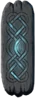
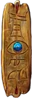
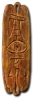
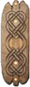
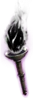
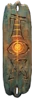
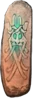
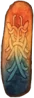

Heyday

Nightshade
Grand Charm
Required Level: 6
+20-30 to Life
Adds 5-15 Cold Damage
+1-2 Freezes target
+15% Faster Run/Walk Speed
Unique Grand Charm
Nightshade
Carry only one.
- Type
- Grand Charm
- Base
- Grand Charm
- Required level
- 6
- Item level
- 6
Other unique Grand Charms

Gheed's Fortunelevel 55
Latent Cold Rupturelevel 75- Latent Flame Riftlevel 75
- Latent Crack of the Heavenslevel 75
- Latent Rotting Fissurelevel 75
- Latent Bone Breaklevel 75
- Latent Black Cleftlevel 75

Queen's Calllevel 85
Obsidian Beaconlevel 85
Triskelionlevel 32
Web of Wyrdlevel 56
Conclave of Elementslevel 80